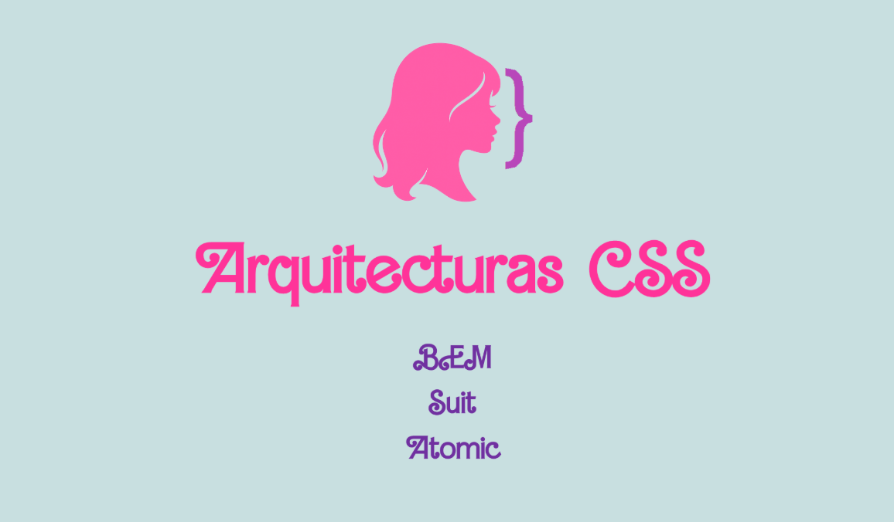
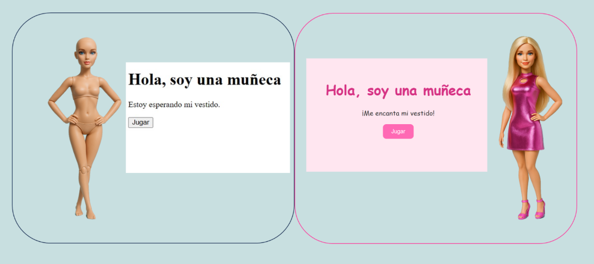

ARQUITECTURAS CSS
En esta práctica exploramos tres arquitecturas CSS populares que ayudan a
establecer el código organizado, escalable y fácil de mantener.

Píldora sobre metodologías CSS
Ver presentación
Aquí, puedes probar el resultado de cada estilo aplicado.
BEM
Explorar
SUIT CSS
Explorar
Atomic CSS
Explorar

Prueba de la presentación
Ver prueba